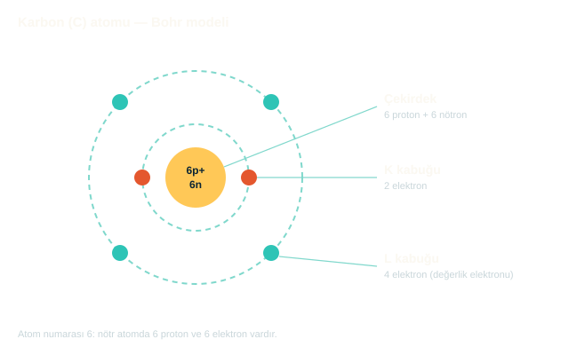

Bölüm 1 · Temeller
Atomdan moleküle
Madde, gözle göremeyeceğimiz kadar küçük taneciklerden oluşur. Bu taneciklerin en küçüğü atomdur.
Atomun merkezinde proton (+) ve nötron (0) içeren çekirdek bulunur. Elektronlar (−) ise çekirdek etrafındaki kabuklarda dolanır. Bir elementin atom numarası, çekirdeğindeki proton sayısıdır; nötr bir atomda elektron sayısı da buna eşittir.

Atom
Bir elementin kimyasal özelliklerini taşıyan en küçük birimdir. Örnek: C, O, H.
Molekül
En az iki atomun kimyasal bağlarla birleşmesiyle oluşan, maddenin özelliğini taşıyan en küçük tanecik. Örnek: O2, H2O, CH4.
Bileşik
İki ya da daha fazla farklı elementin belirli oranlarda birleşmesiyle oluşur. Örnek: su (H2O), karbondioksit (CO2).
Atomlar neden birleşir?
Atomlar kararlı bir yapıya ulaşmak ister. Değerlik elektronlarını bir soygaz gibi tamamlamaya çalışırlar; bunun için elektron verir, alır ya da ortaklaşa kullanır.